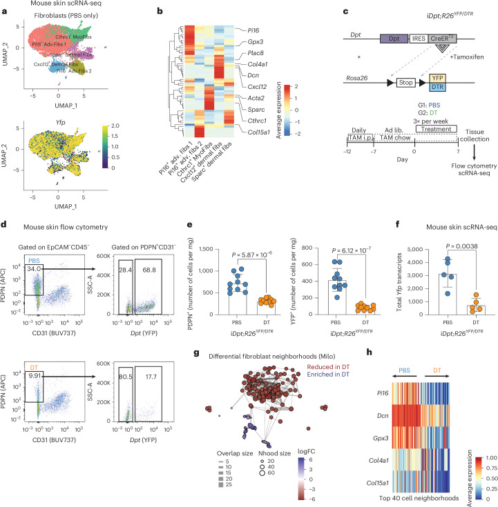
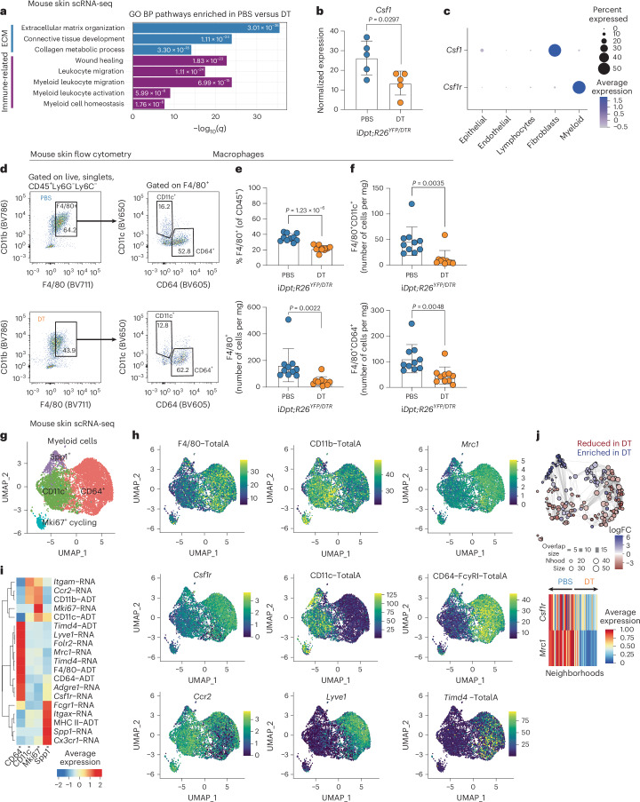
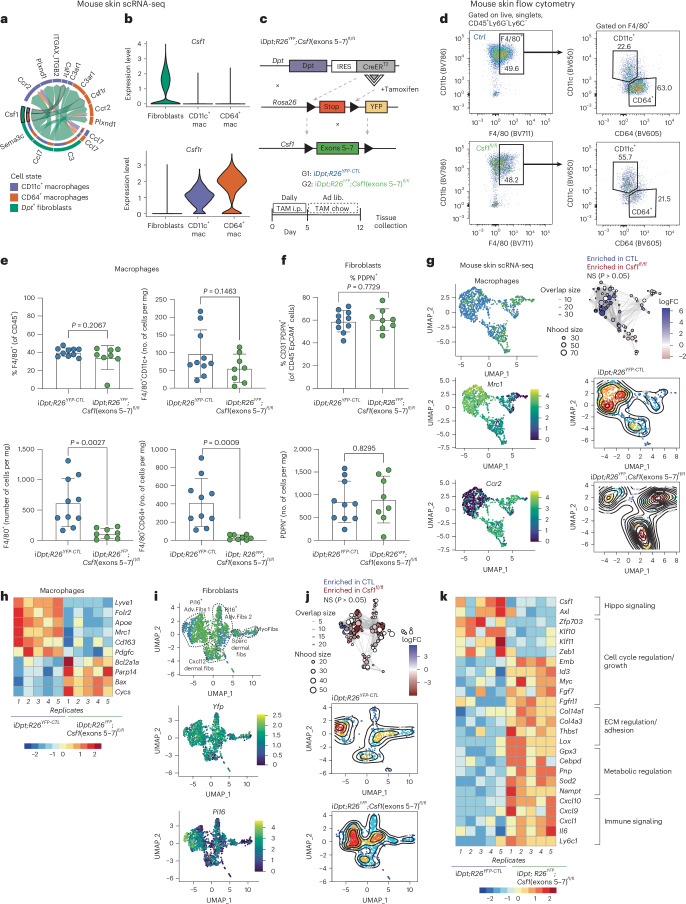
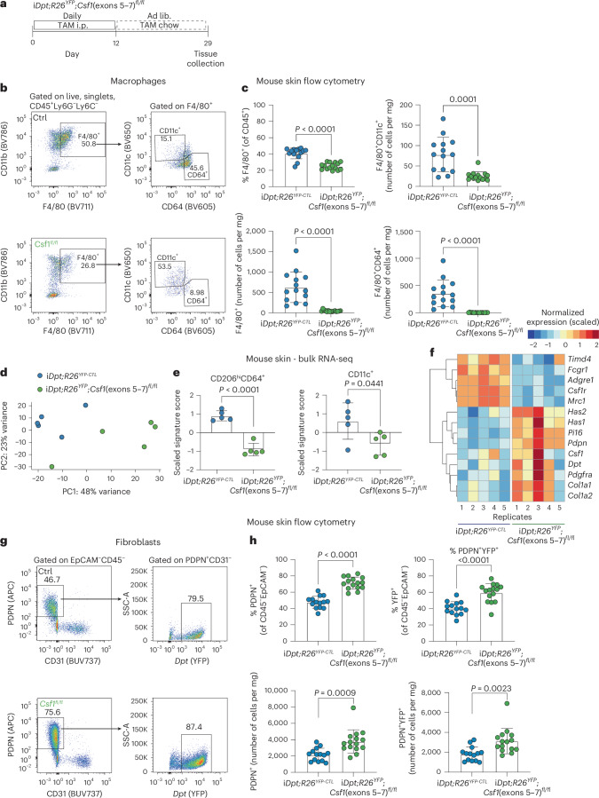
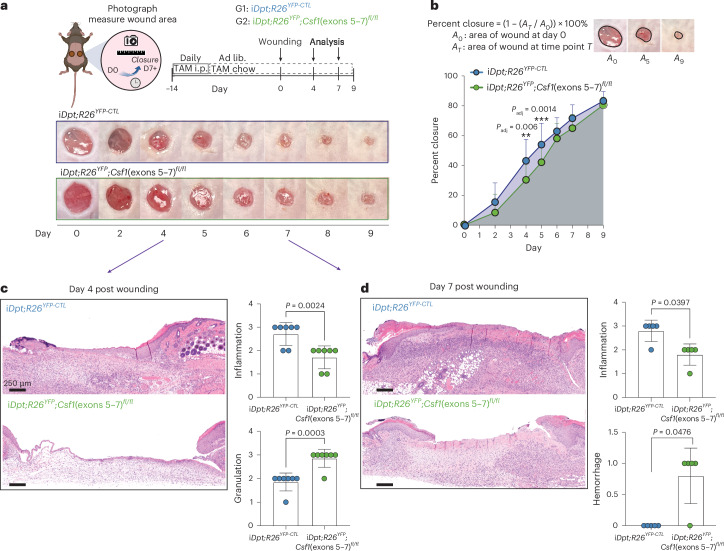
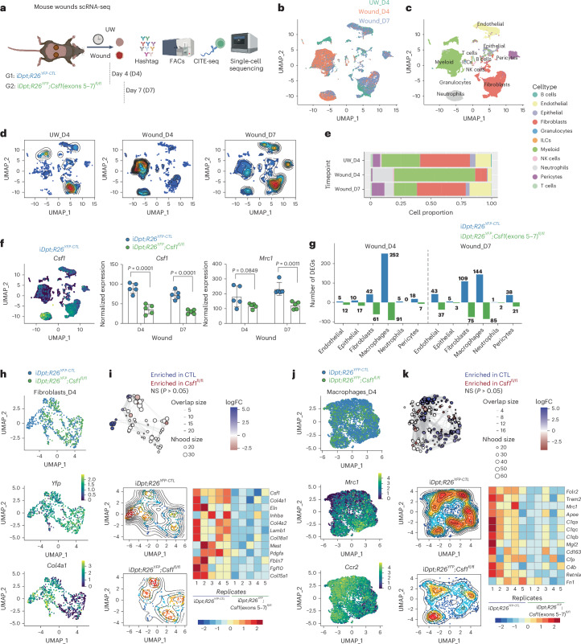
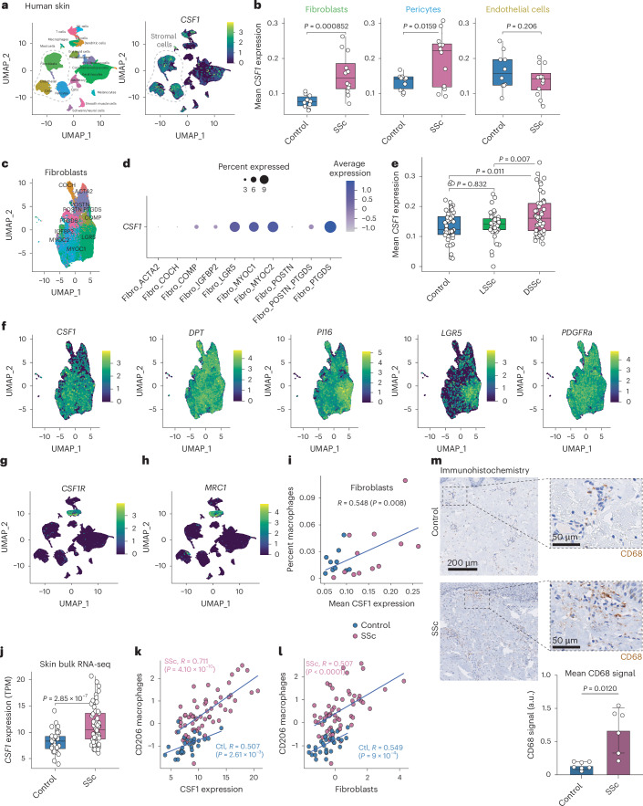
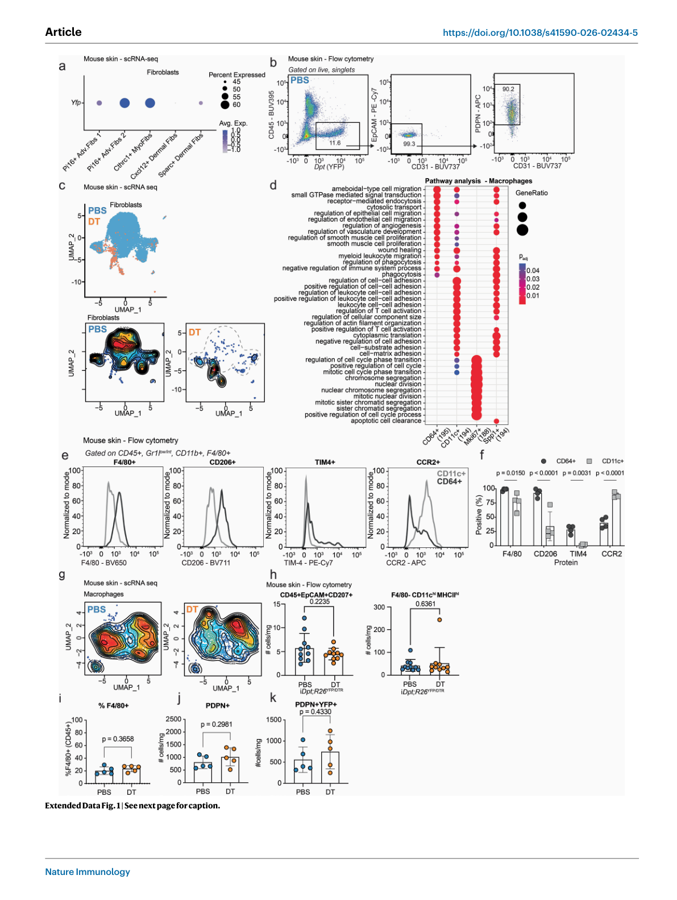
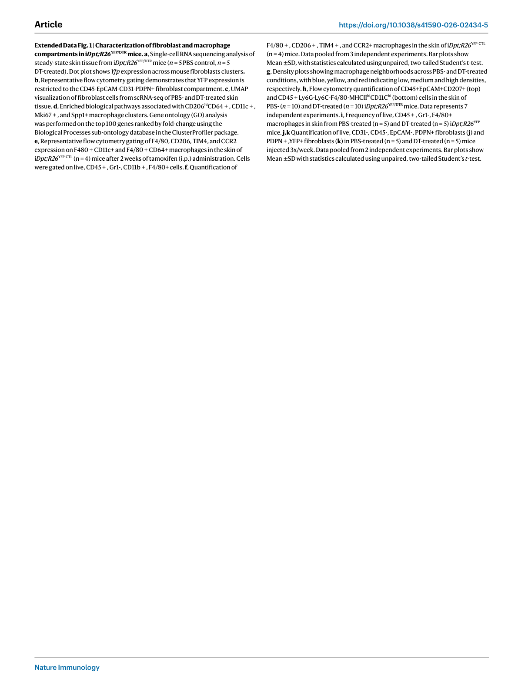
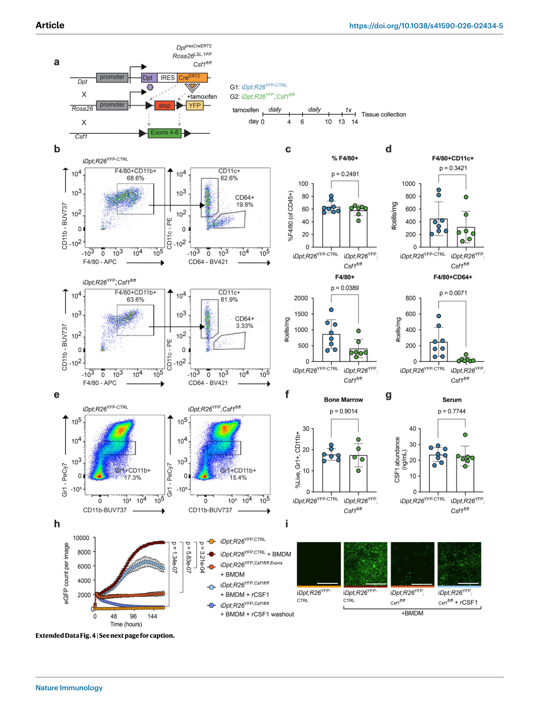

本文献笔记由 Claudian 自动生成，元数据已同步至 Zotero (ItemID: 1891, Zotero Key: 5BCF9E59)
一、研究背景与科学问题#
1.1 疾病背景#
皮肤是人体最大的器官，其完整性依赖于皮肤中多种细胞类型之间的精细协调。**成纤维细胞（fibroblasts）**是皮肤真皮层的主要间质细胞，负责合成细胞外基质（ECM）蛋白（如胶原蛋白、弹性蛋白）、维持组织结构以及调节伤口愈合过程。**巨噬细胞（macrophages）**则是皮肤免疫系统的核心组分，参与炎症反应、病原体清除和组织修复。
皮肤损伤（如外伤、手术、慢性溃疡）和纤维化疾病（如系统性硬化症/硬皮病，systemic sclerosis）的发生均与成纤维细胞和巨噬细胞的功能失调密切相关。然而，这两种细胞如何在体内（in vivo）相互调节，以维持皮肤组织稳态，其具体机制尚不清楚。
1.2 机制背景#
已有体外（in vitro）研究确立了成纤维细胞与巨噬细胞之间的crosstalk：
- 成纤维细胞可分泌 CSF1（Colony-Stimulating Factor 1，即 M-CSF） 支持组织驻留巨噬细胞的存活和增殖
- 巨噬细胞可分泌多种生长因子（如 PDGF、TGF-β）调节成纤维细胞的活化和增殖
- Buechler 等（2021，Immunity）综述了 fibroblast-macrophage 相互作用在健康、纤维化和肿瘤中的意义
- Zhou 等（2022，PNAS）证明间质细胞通过 microenvironmental sensing 控制巨噬细胞群体大小
关键科学问题：
- CSF1-依赖的成纤维细胞→巨噬细胞信号：成纤维细胞来源的 CSF1 在体内皮肤中支持哪些巨噬细胞亚群？
- 巨噬细胞→成纤维细胞反向调控：巨噬细胞是否在体内反过来调节成纤维细胞？其分子机制是什么？
- 临床相关性：该调控轴在人类纤维化疾病（如系统性硬化症）中如何变化？是否具有治疗靶点价值？
二、整体研究思路（技术路线）#
多组学 + 遗传学小鼠模型 + 人组织验证
第1步：单细胞多组学解析小鼠皮肤 Fibroblast + Macrophage 亚群
↓ scRNA-seq + CITE-seq
鉴定皮肤主要成纤维细胞亚群（Dpt+ fibroblasts ~80%）
鉴定皮肤主要巨噬细胞亚群（CD64+ 和 CD11c+）
确认 Dpt+ 成纤维细胞是皮肤 CSF1 的主要来源
第2步：遗传学小鼠模型验证 Fibroblast → Macrophage 信号
↓ iDpt-CreERT2; Csf1-floxed mice
条件性敲除 Dpt+ 成纤维细胞中 Csf1
检测皮肤巨噬细胞数量和亚群变化
第3步：反向验证 Macrophage → Fibroblast 信号
↓ 抗体介导巨噬细胞耗竭（抗-CSF1R）
单细胞转录组测序检测成纤维细胞转录组变化
形态学和组织学分析
第4步：伤口愈合功能验证
↓ iDpt; Csf1-floxed 条件敲除 + 皮肤伤口模型
创面愈合速度、形态学和组织学评估
第5步：人类疾病组织验证
↓ 系统性硬化症（硬皮病，SSc）患者皮肤样本
CSF1 表达、巨噬细胞浸润与疾病严重程度相关性分析
三、主要结果#
Result 1：皮肤成纤维细胞和巨噬细胞的多组学图谱#
核心发现： 单细胞 RNA 测序（scRNA-seq）和 CITE-seq 联合分析解析了小鼠皮肤真皮层和皮下组织中成纤维细胞和巨噬细胞的亚群组成。
主要证据：
- 小鼠皮肤中 Dpt+（dermatopontin）成纤维细胞 约占总成纤维细胞的 80%，是最主要的成纤维细胞亚群
- Dpt+ 成纤维细胞高表达 Csf1，是皮肤 CSF1 的主要来源
- 皮肤驻留巨噬细胞分为两群：
- CD64+ 巨噬细胞：组织驻留型，高表达 Timd4、Lyve1、Folr2（与淋巴窦和血管相关）
- CD11c+ 巨噬细胞：单核细胞来源型（mo-MΦ），表达 Ccr2，分布于真皮
- Ligand-receptor 分析（CellChat）预测 Dpt+ 成纤维细胞通过 CSF1-CSF1R 配体-受体对与巨噬细胞通讯
意义： 首次在单细胞水平精确描绘了皮肤成纤维细胞-巨噬细胞通讯网络，确认 CSF1 为关键介导分子。
Figure 1 — Targeted depletion of Dpt+ fibroblasts

图注: 利用 iDpt;DTR 转基因小鼠模型特异清除 Dpt+ 成纤维细胞，观察皮肤结构破坏等表识。（材源：PMC13043295，CC BY-NC-ND 4.0）
Figure 2 — Dpt+ fibroblast depletion reduces CSF1 and skin macrophages

图注: Dpt+ 成纤维细胞清除后，皮肤 CSF1 蛋白水平显著下降，伴隟 F4/80+ CD64+ 巨噬细胞数量显著减少，揭示 Dpt+ 成纤维细胞 → CSF1 → 巨噬细胞 的调控�%BD�。（材源：PMC13043295，CC BY-NC-ND 4.0）
Result 2：条件性敲除 Dpt+ 成纤维细胞中 Csf1 导致巨噬细胞减少#
核心发现： 在 Dpt+ 成纤维细胞中条件性敲除 Csf1 后，皮肤 CD64+ 和 CD11c+ 巨噬细胞均显著减少。
主要证据：
- iDpt-CreERT2; Csf1-floxed 小鼠经他莫昔芬诱导后：
- CD64+ 巨噬细胞数量急剧下降（急性依赖）
- CD11c+ 巨噬细胞延迟性减少（慢性依赖）
- 巨噬细胞减少呈时间依赖性渐进发展
- 流式细胞术和免疫荧光染色证实两种巨噬细胞亚群均显著减少
- 纤维细胞耗竭模型（iDpt-CreERT2; R26-YFP/DTR）也观察到类似巨噬细胞减少，证实了成纤维细胞对巨噬细胞的广泛支撑作用
意义： 首次在体内（in vivo）证明成纤维细胞来源的 CSF1 对维持皮肤巨噬细胞群体稳态至关重要，且不同巨噬细胞亚群对 CSF1 的依赖程度不同。
Figure 1（续）— 皮肤空间组织与 CSF1 依赖的巨噬细胞维持（见于上图 Extended Data Fig 部分面板） 图注：Main Figure 1 中包含免疫荧光（IF）染色展示 Dpt+ 成纤维细胞与 CD64+/CD11c+ 巨噬细胞的空间分布；Extended Data Fig 3-5（见下图 Extended Data 图）进一步展示 CSF1 条件敲除后巨噬细胞显著减少的空间证据，证实成纤维细胞对巨噬细胞的空间支撑作用。
Result 3：巨噬细胞反向调节成纤维细胞——双向调控的发现#
核心发现： 巨噬细胞耗竭后，成纤维细胞出现明显的细胞数增加和转录组变化，证实了成纤维细胞←巨噬细胞的反向调控。
主要证据：
- 抗 CSF1R 抗体处理耗竭巨噬细胞后：
- 成纤维细胞数量显著增加（矛盾性扩增）
- scRNA-seq 显示成纤维细胞转录组广泛变化：
- 细胞周期相关基因下调（G2/M 期阻滞）
- 代谢通路重编程（糖代谢、脂质代谢改变）
- 免疫信号通路改变（干扰素响应、趋化因子表达）
- 皮肤组织形态学改变：真皮层增厚、细胞外基质沉积增多
- CellChat 分析：巨噬细胞可能通过多种配体（如 M-CSF、IL-34、TGF-β 等）与成纤维细胞通讯，调控其增殖和代谢
- 证实了成纤维细胞与巨噬细胞之间存在双向（bidirectional）"推拉"调控关系
意义： 这是本文最核心的发现——首次在体内证明巨噬细胞可以反向调节成纤维细胞，确立了 fibroblast-macrophage equilibrium 的双向性。
Figure 3 — Acute Csf1 loss in Dpt+ fibroblasts reduces CD64+ skin macrophages

图注: 在 iDpt;Csf1 fl/fl 条件敲除小鼠中，急性敲除 Dpt+ 成纤维细胞 Csf1 基因，特开性降低 CD64+ 巨噬细胞不同身阵。（材源：PMC13043295，CC BY-NC-ND 4.0）
Result 4：Dpt+ 成纤维细胞来源 CSF1 调控皮肤伤口愈合#
核心发现： 成纤维细胞来源的 CSF1 通过支持巨噬细胞，间接但不可或缺地促进皮肤伤口愈合。
主要证据：
- 在 Csf1 条件敲除小鼠中构建全层皮肤伤口模型：
- 伤口愈合速度显著延迟
- 再上皮化（re-epithelialization）面积减少
- 肉芽组织（granulation tissue）形成不良
- α-SMA+ 肌成纤维细胞数量减少
- 胶原沉积和血管新生受损
- 提示：成纤维细胞-巨噬细胞轴对于有效的皮肤修复是不可或缺的
意义： 将 fibroblast-macrophage crosstalk 与体内生理功能（伤口愈合）直接联系起来，揭示了该调控轴的生物学意义。
Figure 4 — Chronic Csf1 loss reduces macrophages and increases fibroblasts

图注: 慢�%A7 Csf1 缺失导致巨噬细胞持续�%A7减少，成纤维细胞数量反而增加（反馈�%A7增殊）。（材源：PMC13043295，CC BY-NC-ND 4.0）
Result 5：系统性硬化症（硬皮病）中 CSF1-CSF1R 轴失调#
核心发现： 在人类系统性硬化症（硬皮病，systemic sclerosis，SSc）患者皮肤中，成纤维细胞来源的 CSF1 表达升高，巨噬细胞浸润增加，且与疾病严重程度正相关。
主要证据：
- SSc 患者皮肤活检组织中：
- 成纤维细胞 CSF1 表达显著升高
- 巨噬细胞数量显著增加（CD68+ 细胞浸润增多）
- CSF1 表达水平与疾病严重程度（改良 Rodnan 皮肤评分，mRSS）正相关
- 免疫荧光染色共定位证实增多的巨噬细胞与 CSF1+ 成纤维细胞在空间上邻近
- 提示：该轴的失调可能参与 SSc 的发病机制
意义： 将小鼠中发现的新机制直接转化应用于人类纤维化疾病，为 SSc 提供了新的分子靶点和治疗思路。
Figure 5 — Reduced macrophages from fibroblast-derived Csf1 loss impair skin wound healing

图注: 全层皮肤伤及模型中，iDpt;Csf1 fl/fl 小鼠伤及懒同明显廚后进居卷原，补血及伤增生。（材源：PMC13043295，CC BY-NC-ND 4.0）
Figure 6 — scRNA-seq identifies cell composition changes during wounding

图注: 10x Genomics 单细胞 RNA-seq 解析伤及懒同中细胞组成变化；量际主要细胞类�%9e�（Dpt+ 成纤维细胞のcoD11c+/巨噬细胞のco%E8�%92%E8���%BD%93%E6%88%90%E7%BB�%E7%BB%86%E8%83%9E%E7%AD%89%ef%bc%89%E5%8f�%E5%B7%AE%E5%BC%82%E5%9F%BA%E5%9B%A0%E8%A1%A8%E8%BE%BE%E8%B0%B1%E3%80%82（�%9d%90%E6%BA%90�%9aPMC13043295�%8cCC BY-NC-ND 4.0）
Figure 7 — Human skin fibroblast CSF1 correlates with macrophages

图注: 人正正常肤组�%BB%9F�%B8�，FACS �%88%86%E9%80%89 DPT+ �%88%90%E7%BA%A4%E7%BB%B4%E7%BB%86%E8%83%9E%E9%AB%98%E8%A1%A8%E8%BE%BE CSF1 mRNA�%bc%9bDPT+ �%88%90%E7%BA%A4%E7%BB%B4%E7%BB%86%E8%83%9E CSF1 �%A1%A8%E8%BE%BE%E4%B8%8E%E9%82%BB%E8%BF%91 CD68+ �%B7%A8%E5%99%AC%E7%BB%86%E8%83%9E%E6%95%B0%E9%87%8F%E5%93%8D%E6%AD%A3%E5%85%B3�%9b%E7%A1%AC%E7%9A%AE%E7%97%85�%BC%88SSc%EF%BC%89%E6%82%A3%E8%80%85%E7%9A%AE%E8%82%A4%E4%B8%AD%E8%AF%A5%E8%BD%B4%E8%BF%9B%E4%B8%80%E6%AD%A5%E5%A4%B1%E8%B0%83�%80%82（�%9d%90�%BA%90�%9aPMC13043295�%8cCC BY-NC-ND 4.0）
四、机制模型#
4.1 双向调控"推拉"平衡模型#
【Dpt+ 成纤维细胞】
↓
分泌 CSF1
↓
┌────────────┴────────────┐
↓ ↓
【CD64+ 巨噬细胞】 【CD11c+ 巨噬细胞】
（组织驻留型） （单核细胞来源型）
↑ ↑
└────────────┬────────────┘
↓
分泌多种因子
（CSF1、IL-34、TGF-β 等）
↓
【Dpt+ 成纤维细胞】
→ 调节细胞周期
→ 调节代谢
→ 调节免疫信号
→ 维持组织稳态/修复
4.2 皮肤损伤/纤维化中的失衡#
| 状态 | CSF1 水平 | 巨噬细胞 | 成纤维细胞 | 结果 |
|---|---|---|---|---|
| 稳态 | 正常 | 稳态 | 正常 | 组织完整 |
| 伤口愈合 | ↑ | ↑→↓（动态变化） | 活化→增殖 | 组织修复 |
| SSc（硬皮病） | 持续升高 | 持续增加 | 过度活化 | 纤维化 |
4.3 治疗转化潜力#
- CSF1R 抑制剂：理论上可减少巨噬细胞→成纤维细胞的过度激活信号，用于治疗纤维化
- 风险：CSF1R 阻断可能同时损害正常的伤口愈合能力
- 精准医学：需要开发仅阻断致病性"巨噬细胞→成纤维细胞"信号而不影响"成纤维细胞→巨噬细胞"信号的策略
五、研究亮点与局限性#
研究亮点#
- ✅ 双向调控概念的首次体内证实：不仅证明成纤维细胞调节巨噬细胞，更首次在体内证明巨噬细胞可以反向调节成纤维细胞
- ✅ 精确的遗传学模型：使用 iDpt-CreERT2 条件性敲除系统，实现细胞类型和时机特异性操控
- ✅ 多组学整合：单细胞 RNA-seq + CITE-seq + CellChatligand-receptor 分析，从多个维度解析细胞间通讯
- ✅ 从机制到临床转化：从小鼠模型到人类疾病（系统性硬化症）的完整闭环研究
- ✅ 治疗靶点潜力：CSF1-CSF1R 轴为纤维化疾病提供了新的治疗干预思路
- ✅ 高质量期刊：Nature Immunology（IF≈30.5），中科院1区
研究局限性#
- ⚠️ 物种差异：从小鼠到人类的转化验证需进一步研究；人类皮肤微环境与小鼠存在差异
- ⚠️ 疾病模型单一：系统性硬化症仅做了相关性分析，缺乏功能性验证（如 CSF1R 阻断在 SSc 模型中的治疗效果）
- ⚠️ 巨噬细胞→成纤维细胞的具体配体：虽然 CellChat 预测了多种候选分子，但具体的反向调节配体（除 CSF1 外）尚未被完全阐明
- ⚠️ CSF1R 阻断的双刃剑效应：CSF1R 阻断可能同时影响成纤维细胞→巨噬细胞和巨噬细胞→成纤维细胞两个方向，临床转化需谨慎
- ⚠️ 长期效应未知：条件敲除实验主要在急性/亚急性时间窗口进行，慢性纤维化进程中的角色尚需长期研究
六、核心参考文献#
Buechler, M. B., Fu, W. & Turley, S. J. Fibroblast–macrophage reciprocal interactions in health, fibrosis, and cancer. Immunity 54, 903–915 (2021).
10.1016/j.immuni.2021.04.021Buechler, M. B. et al. Cross-tissue organization of the fibroblast lineage. Nature 593, 575–579 (2021).
10.1038/s41586-021-03549-5Zhou, X. et al. Microenvironmental sensing by fibroblasts controls macrophage population size. Proc. Natl Acad. Sci. USA 119, e2205360119 (2022).
10.1073/pnas.2205360119Shook, B. A. et al. Myofibroblast proliferation and heterogeneity are supported by macrophages during skin repair. Science 362, eaar2971 (2018).
10.1126/science.aar2971Gur, C. et al. LGR5 expressing skin fibroblasts define a major cellular hub perturbed in scleroderma. Cell 185, 1373–1388 (2022).
10.1016/j.cell.2022.03.011Plikus, M. V. et al. Fibroblasts: origins, definitions, and functions in health and disease. Cell 184, 3852–3872 (2021).
10.1016/j.cell.2021.06.024Franklin, R. A. Fibroblasts and macrophages: collaborators in tissue homeostasis. Immunol. Rev. 302, 86–103 (2021).
10.1111/imr.12989Honda, A. et al. CD206+ macrophages facilitate wound healing through interactions with Gpnmb^hi fibroblasts. EMBO Rep. 26, 3679–3704 (2025).
10.1038/s44319-025-00496-4
七、相关主题文献推荐#
| 方向 | 文献 | 期刊 | 年份 |
|---|---|---|---|
| 成纤维细胞谱系跨组织图谱 | Buechler et al. | Nature | 2021 |
| 成纤维细胞-巨噬细胞双向互作综述 | Buechler, Fu & Turley | Immunity | 2021 |
| 系统性硬化症中 LGR5+ 成纤维细胞 | Gur et al. | Cell | 2022 |
| 皮肤伤口单细胞时空 roadmap | Liu et al. | Cell Stem Cell | 2025 |
| 皮肤疾病相关成纤维细胞亚型共享 | Steele et al. | Nat Immunol | 2025 |
| 巨噬细胞支持肌成纤维细胞增殖 | Shook et al. | Science | 2018 |
笔记生成日期：2026-04-13 | 通讯作者：Matthew B. Buechler (matthew.buechler@utoronto.ca) & Shannon J. Turley (shannon.turley@gmail.com) | 机构：Genentech / University of Toronto / UTHSCSA
附图：Extended Data Figures#
Extended Data Figures 1–2（PDF 第 7 页，与 Main Figure 1 同页）

- Extended Data Fig 1a–f：细胞注释验证、scRNA-seq + CITE-seq 抗体染色额外分析、人皮肤样本验证
- Extended Data Fig 2a–e：人皮肤纤维化（硬皮病）样本中 CSF1 表达与巨噬细胞浸润的相关性分析
Extended Data Figures 3–5（PDF 第 8 页）

- Extended Data Fig 3a–e：CSF1 条件敲除后皮肤巨噬细胞亚群变化的定量分析与空间分布
- Extended Data Fig 4a–h：成纤维细胞与巨噬细胞互作的额外验证（流式、IF 多标）
- Extended Data Fig 5a–b：CellChat ligand-receptor 通讯预测的额外分析
Extended Data Figure 6（PDF 第 12 页）

图注：Extended Data Fig 6a–h：Apcr^min^ / SPP1 阻断治疗纤维化的额外机制分析，包括伤口愈合、基因表达谱、纤维化标志物定量等